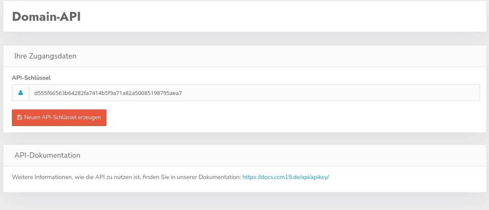

Die DomainAPI stellt eine Schnittstelle bereit mit der Daten pro Domain augelesen werden können.

Hier können Sie den API Key neu setzen resp. auslesen.
Die gesamte Dokumentation der Schnittstelle finden Sie hier. General API Dokumentation